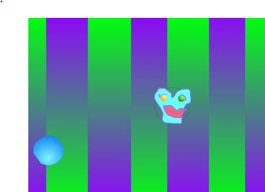
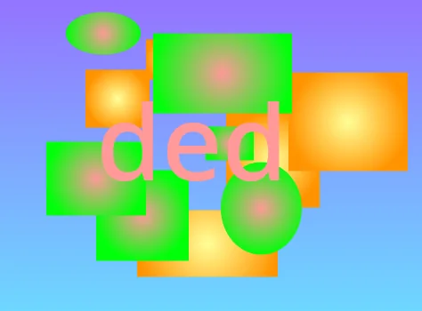
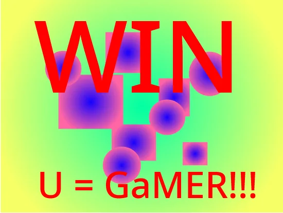

Games & mechanics
MMORP
The Scratch original: ten levels, countless projectiles, one infamous finale.
Overview
The original MMORP began the series as a Scratch game about dodging projectiles through ten enemy levels. It became popular to play in class and inspired copycats and spin-offs.
The final Tennemy level became notorious for its difficulty. The creator’s notes describe a win screen that was effectively unreachable, even with developer tools.
How to play
Move MMORP with WASD or the arrow keys and dodge the enemies. Press B to turn randomly. The character can wrap around the edges of the screen.
The game may contain flashing lights.
Evtest and development
Evtest opens a passcode prompt for developer modes and cheats. The original Scratch notes list billy for 100 lives and EZ for easy mode; yes enables a health-regenerating developer mode.
The project’s code uses several different approaches to enemy behavior. Its experimental construction is part of the original’s history.
Enemy order
The original ten levels are Squelch, Plopper, Threnemy, Helper, Chomper, Wall, Momo, Prickly, Derek, and Tennemy.
Gallery



KEEP EXPLORING